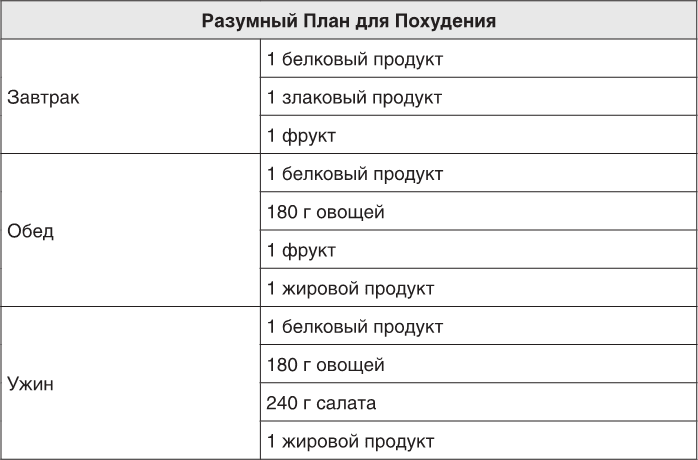
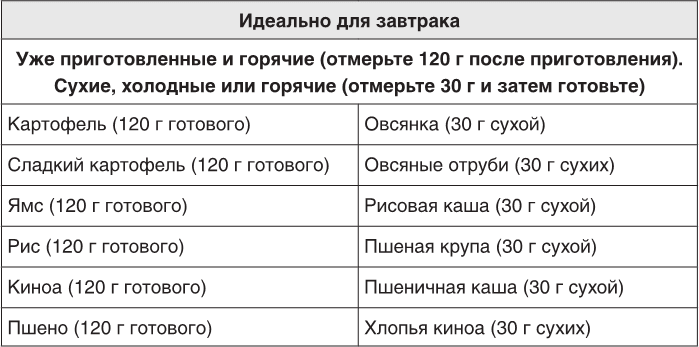
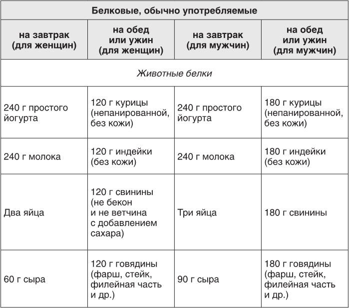
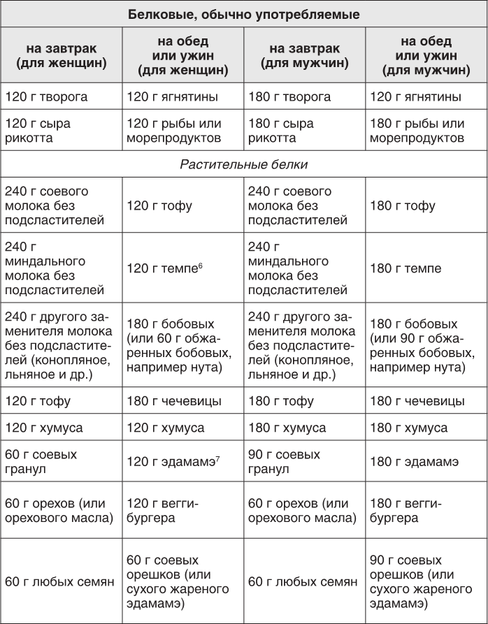
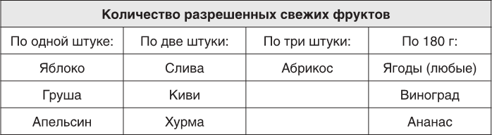
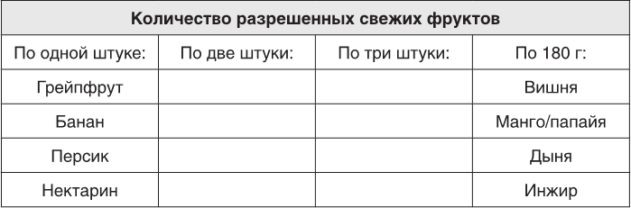
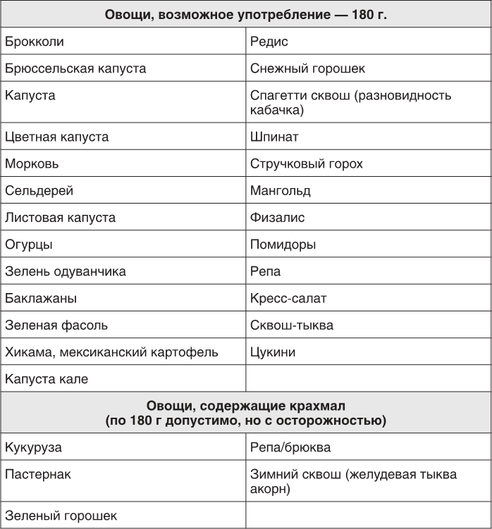
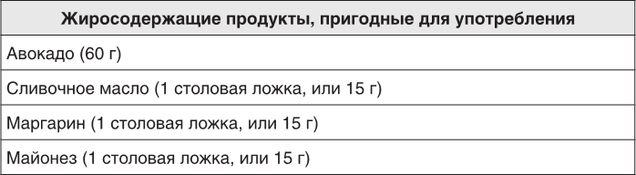

Злаки отлично подходят для Питания в Рамках Разумного, но сначала их стоит есть только на завтрак. После достижения желаемого веса можно добавлять их в обед или ужин. Большинство готовых хлопьев не подходят из-за содержания сахара и муки. Если они не находятся на первых трех позициях в составе — это нормально. Читайте состав продуктов, чтобы избежать искусственных подсластителей и муки. Если у вас непереносимость глютена, ищите безглютеновые альтернативы без сахара и муки. Хлопья киноа — хороший вариант. Для холодных завтраков отмеряйте 30 г и ешьте с молоком, несладким соевым молоком или йогуртом. Остальные заменители молока не рекомендуются для Разумного Плана. Для горячих завтраков используйте 30 г злаков, добавьте 120–180 мл воды или молока и готовьте до нужной консистенции.
 
Для белкового завтрака подойдут обычный и греческий йогурт. Лучше выбирать низкожировые продукты. Орехи и семечки употребляйте умеренно — не более двух порций в неделю. Избегайте соевого, конопляного и рисового молока во время похудения, лучше используйте витаминизированное соевое. Если хотите миндальное молоко, делите порции и комбинируйте его с орехами или семенами. При взвешивании белковых продуктов учитывайте их вес после приготовления. Избегайте бекона и полуфабрикатов; выбирайте органическое мясо. Хороший вариант растительного белка — темпе. Бобовые, как горох и чечевица, также полезны и дешевы. Соевые орешки можно носить с собой и добавлять в салаты. Сушеный нут — отличная закуска в пути, а также хорошо сочетаться с фруктами и овсянкой.
 
Если фрукты нестандартного размера, лучше отмерять 180 г с помощью весов. Для вишни можно отмерить 180 г без косточек или 183 г с ними. Также можно использовать инструмент для извлечения косточек и взвешивать вишни потом.

В Питании в Рамках Разумного нет запрещенных овощей. Вы можете есть их сырыми, готовить или комбинировать. Главное – что в желудке. Не забывайте взвешивать овощи после приготовления и избегать лишнего жира. Используйте специи для добавления вкуса, а масло — в небольшом количестве. Консервированные и замороженные овощи допустимы, но читайте этикетки. Крахмальные овощи следует ограничить до двух порций в неделю. 240 г салата не равняется 240 г листьев! Начните с 60–90 г калорийного салата и добавляйте другие овощи до 240 г. Авокадо и оливки лучше использовать как жиры до периода похудения. В ресторанах будьте осторожны с добавками в салаты. Разнообразие овощей помогает избежать скуки в рационе. Добавляйте по одному новому овощу каждую неделю для улучшения питания.

Вы будете употреблять одну порцию жиров на обед и одну – на ужин. Можно использовать ложку, но лучше взвешивать на электронных весах — это точнее. Одна столовая ложка содержит примерно 15 г. Не взвешивайте «на глазок» — это важно. Различайте здоровые жиры (миндаль, авокадо) и вредные (гидрогенизированные масла). Если готовите, используйте оливковое, авокадо или рапсовое масло, а для салатов – льняное масло. Не превышайте одну столовую ложку за раз. Читайте состав соусов и выбирайте оливковое масло в качестве основы. Отказ от жиров ведет к набору веса и снижению концентрации. Споры о жирах существуют, но важно избегать сахара и муки, есть много овощей и достаточно белков, жиров и клетчатки. Если следить за этими правилами, организм сможет восстановиться. Придерживайтесь созданного плана, но если у вас есть свои принципы по жирам, адаптируйте план под себя — постоянство имеет значение.
Питание в Рамках Разумного – это восстановление организма, а не аскетизм. Еда должна быть вкусной, добавляйте приправы, но убедитесь, что в топ-3 ингредиентов нет сахара или муки. Если часто используете какую-то приправу, сделайте перерыв. ПРИПРАВЫ – это замечательно! Соль важна для клеточных процессов и нейротрансмиссии в мозге. При переходе на цельные продукты уровень натрия может упасть. Это хорошо при высоком давлении, но может вызвать слабость при низком. Пейте много воды и добавляйте соли, если необходимо. Отсутствие достаточной соли в рационе может вызвать проблемы со здоровьем. Если у вас нет высокого давления, можете немного увеличить потребление соли, но проконсультируйтесь с врачом.
=======Злаки отлично подходят для Питания в Рамках Разумного, но сначала их стоит есть только на завтрак. После достижения желаемого веса можно добавлять их в обед или ужин. Большинство готовых хлопьев не подходят из-за содержания сахара и муки. Если они не находятся на первых трех позициях в составе — это нормально. Читайте состав продуктов, чтобы избежать искусственных подсластителей и муки. Если у вас непереносимость глютена, ищите безглютеновые альтернативы без сахара и муки. Хлопья киноа — хороший вариант. Для холодных завтраков отмеряйте 30 г и ешьте с молоком, несладким соевым молоком или йогуртом. Остальные заменители молока не рекомендуются для Разумного Плана. Для горячих завтраков используйте 30 г злаков, добавьте 120–180 мл воды или молока и готовьте до нужной консистенции.
Для белкового завтрака подойдут обычный и греческий йогурт. Лучше выбирать низкожировые продукты. Орехи и семечки употребляйте умеренно — не более двух порций в неделю. Избегайте соевого, конопляного и рисового молока во время похудения, лучше используйте витаминизированное соевое. Если хотите миндальное молоко, делите порции и комбинируйте его с орехами или семенами. При взвешивании белковых продуктов учитывайте их вес после приготовления. Избегайте бекона и полуфабрикатов; выбирайте органическое мясо. Хороший вариант растительного белка — темпе. Бобовые, как горох и чечевица, также полезны и дешевы. Соевые орешки можно носить с собой и добавлять в салаты. Сушеный нут — отличная закуска в пути, а также хорошо сочетаться с фруктами и овсянкой.
Если фрукты нестандартного размера, лучше отмерять 180 г с помощью весов. Для вишни можно отмерить 180 г без косточек или 183 г с ними. Также можно использовать инструмент для извлечения косточек и взвешивать вишни потом.
В Питании в Рамках Разумного нет запрещенных овощей. Вы можете есть их сырыми, готовить или комбинировать. Главное – что в желудке. Не забывайте взвешивать овощи после приготовления и избегать лишнего жира. Используйте специи для добавления вкуса, а масло — в небольшом количестве. Консервированные и замороженные овощи допустимы, но читайте этикетки. Крахмальные овощи следует ограничить до двух порций в неделю. 240 г салата не равняется 240 г листьев! Начните с 60–90 г калорийного салата и добавляйте другие овощи до 240 г. Авокадо и оливки лучше использовать как жиры до периода похудения. В ресторанах будьте осторожны с добавками в салаты. Разнообразие овощей помогает избежать скуки в рационе. Добавляйте по одному новому овощу каждую неделю для улучшения питания.
Вы будете употреблять одну порцию жиров на обед и одну – на ужин. Можно использовать ложку, но лучше взвешивать на электронных весах — это точнее. Одна столовая ложка содержит примерно 15 г. Не взвешивайте «на глазок» — это важно. Различайте здоровые жиры (миндаль, авокадо) и вредные (гидрогенизированные масла). Если готовите, используйте оливковое, авокадо или рапсовое масло, а для салатов – льняное масло. Не превышайте одну столовую ложку за раз. Читайте состав соусов и выбирайте оливковое масло в качестве основы. Отказ от жиров ведет к набору веса и снижению концентрации. Споры о жирах существуют, но важно избегать сахара и муки, есть много овощей и достаточно белков, жиров и клетчатки. Если следить за этими правилами, организм сможет восстановиться. Придерживайтесь созданного плана, но если у вас есть свои принципы по жирам, адаптируйте план под себя — постоянство имеет значение.
Питание в Рамках Разумного – это восстановление организма, а не аскетизм. Еда должна быть вкусной, добавляйте приправы, но убедитесь, что в топ-3 ингредиентов нет сахара или муки. Если часто используете какую-то приправу, сделайте перерыв. ПРИПРАВЫ – это замечательно! Соль важна для клеточных процессов и нейротрансмиссии в мозге. При переходе на цельные продукты уровень натрия может упасть. Это хорошо при высоком давлении, но может вызвать слабость при низком. Пейте много воды и добавляйте соли, если необходимо. Отсутствие достаточной соли в рационе может вызвать проблемы со здоровьем. Если у вас нет высокого давления, можете немного увеличить потребление соли, но проконсультируйтесь с врачом.
>>>>>>> cd782ed32d7bf386b80205d137891c86e89a05ed